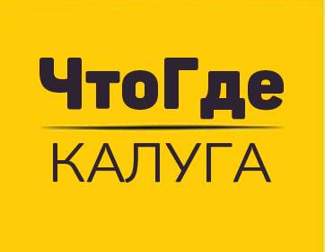

Философия Международного фестиваля современной керамики «Млечный путь 2026». Выставка «Вне Земли»
Философия фестиваля современной керамики «Млечный путь» в 2026 году основана на идее исследования границ человеческого творчества и восприятия мира через призму космоса, технологий и новых форм выражения, объединение керамики с темами межпланетных пространств, футуризма и взаимодействия человека с Космосом.
Космос, как источник вдохновения. Керамика становится инструментом для визуализации космических образов, галактик, планет и других внеземных объектов. Работы участников отражают красоту и загадочность Вселенной, её бесконечность и многогранность.
Космос, как источник трансформации и эволюции. Керамика как материал, подверженный изменениям в процессе создания (от глины до готового изделия), символизирует эволюцию идей и форм.
Космос и Человечество. Тема «Вне Земли» открывает возможности для размышлений о месте человека во Вселенной, его связи с космосом и возможных сценариях жизни на других планетах.
Такая философия подчеркивает современный характер фестиваля, его ориентацию на будущее и стремление преодолеть границы привычного восприятия керамики.
Что пишут о нас в СМИ


Участники
Программа фестиваля
Программа будет объявлена ближе к началу фестиваля.
Следите за обновлениями!
Партнеры


Информационные партнеры


